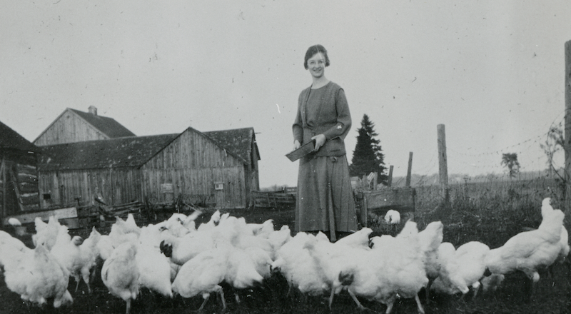

Our Mandate
The Osgoode Township Rural Museum’s mandate is to collect, preserve, display, study, interpret and make accessible the material and cultural heritage of the Osgoode Township as a means to further the understanding of the former Osgoode Township's significance to the greater Ottawa community as an example of rural and agricultural life.
HISTORY

The Osgoode Township Historical Society & Museum traces its founding back to November 23, 1972 when the first meeting to organize "The New Horizons Historical Group" was held. Their purpose in establishing this group was to do research, create interest, collect data, preserve and publish the history of Osgoode Township and the genealogy of its residents.
The founding group developed rapidly and were incorporated under the Province of Ontario Statute by Letters Patent issued in the name of the Osgoode Township Historical Society and Museum on the 25th day of November, 1975.
The initial objective was to prepare a story for the Township of Osgoode's 150th Anniversary in 1977. It was on August 8, 1973 that the founding group signed an agreement with the Township of Osgoode covering the use of the building and property known then as the Vernon Public School. The group held their first meeting in the school on August 23, 1973.
The official opening of the Museum was held on September 21, 1973 with many interesting articles of bygone days on display for the first Visitors' Day. The Agricultural Museum building was subsequently built and officially opened on August 12, 1989. It now provides a home for the vast farming and industrial collection held by the Museum.
The Museum continues to collect information and artifacts relating to life in Osgoode Township and make them available to the public.

Jillian Metcalfe
Executive Director
manager@osgoodemuseum.caJillian Metcalfe grew up in Inkerman, Ontario and attended Carleton University where she received a BA, major in history. She also received an advanced diploma in the Applied Museum Studies Program at Algonquin College. In 2014, she was presented with the Ontario Museum Association Award of Merit. Growing up in a rural community, she took interest in local history at a young age. She joined the Chesterville & District Historical Society in 2009 and has been President there since 2015. In this role, she oversees and is involved in fundraising and events, grant applications, collections management and exhibit development. She has worked for the City of Ottawa Museums and Archives, where the positions were primarily focused on educational and public programming. She also has experience in gilt, built heritage, paper conservation and artifact reproductions through an internship with Parks Canada. Most recently, she worked as an HR advisor for Polar Knowledge Canada, a crown corporation within the Government of Canada.
Ann Robinson
Administrative and Exhibit Officer
administration@osgoodemuseum.caAnn Robinson grew up near Metcalfe on a farm on Bank Street, and now resides in Marvelville with her family. She worked for the Land Registry Office for 20 years serving the public as a clerk, dealing with land registration documents. She was hired on to do data entry at the museum in 2007 and has since become [artefact herself] (haha!) the full time administrative and exhibit officer for the museum.
Caitlyn McDougall
Education Officer
education@osgoodemuseum.caCaitlyn McDougall grew up in historic Bowmanville, Ontario where she took an interest in history from a young age. She completed her BFA at OCAD University in Toronto in 2013 where she focused on art education during her internship at the Art Gallery of Ontario. Since moving to Kemptville, she has worked as Programming Coordinator for Ottawa Summer Solstice and most recently Programming Officer at the Goulbourn Museum.